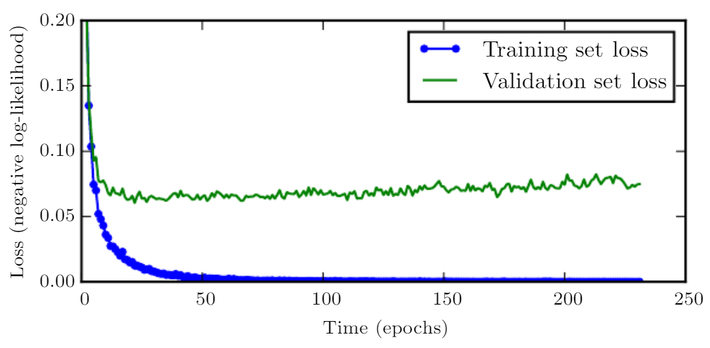
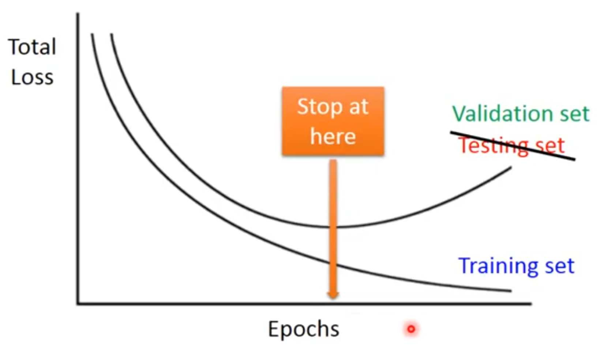
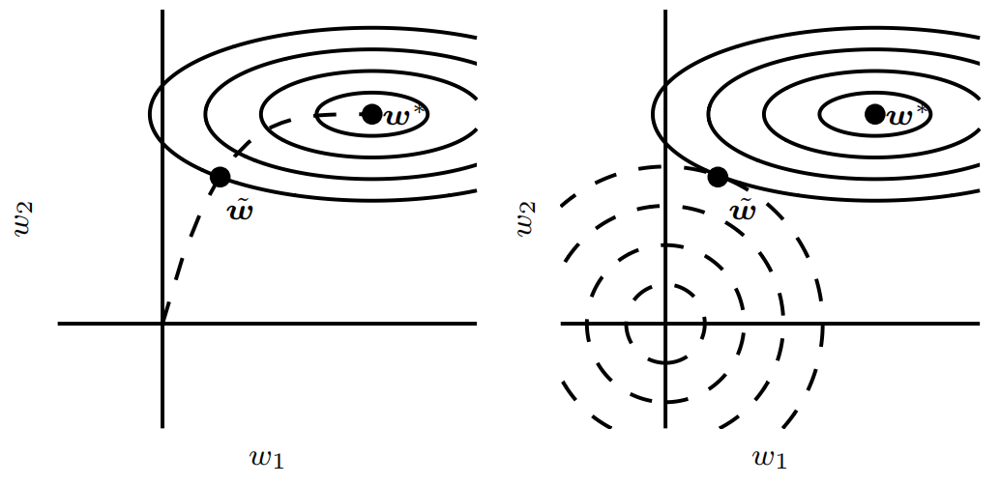

1. 为什么要引入提前终止？
当训练有足够的表示能力甚至会过拟合的大模型时，我们经常观察到，训练误差会随着时间的推移逐渐降低但验证集的误差会再次上升。
图7.3是这些现象的一个例子，这种现象总是非常可靠地反复出现。

这意味着我们只要返回使验证集误差最低的参数设置，就可以获得验证集误差更低的模型（并且因此有希望获得更好的测试误差）。
[success]
这个理论基于一种思想，即验证集低误差比训练集低误差有更好的泛化效果。
因此我们想要的是验证集上最好的点，而不是训练集上最好的点。

在每次验证集误差有所改善后，我们存储模型参数的副本。 当训练算法终止时，我们返回这些参数而不是最新的参数。 当验证集上的误差在事先指定的循环次数内没有进一步改善时，算法就会终止。 此过程在算法7.1中有更正式的说明。
这种策略被称为提前终止。 这可能是深度学习中最常用的正则化形式。 它的流行主要是因为有效性和简单性。
2. 算法的过程及原理
\begin{algorithm}[ht] \caption{用于确定最佳训练时间量的提前终止元算法。 这种元算法是一种通用策略，可以很好地在各种训练算法和各种量化验证集误差的方法上工作。 }
{% raw %}
\label{alg:early_stopping}
\begin{algorithmic}
\STATE 令 {% math %}n{% endmath %} 为评估间隔的步数。
\STATE 令 {% math %}p{% endmath %} 为 ``耐心(patience)''，即观察到较坏的验证集表现{% math %}p{% endmath %}次后终止。
\STATE 令 {% math %}theta_{o}{% endmath %} 为初始参数。
\STATE {% math %}theta \leftarrow theta_{o}{% endmath %}
\STATE {% math %}i \leftarrow 0{% endmath %}
\STATE {% math %}j \leftarrow 0{% endmath %}
\STATE {% math %}v \leftarrow \infty{% endmath %}
\STATE {% math %}theta^* \leftarrow theta{% endmath %}
\STATE {% math %}i^* \leftarrow i{% endmath %}
\WHILE{{% math %}j < p{% endmath %}}
\STATE 运行训练算法{% math %}n{% endmath %}步，更新 {% math %}theta{% endmath %} 。
\STATE {% math %}i \leftarrow i + n{% endmath %}
\STATE {% math %}v' \leftarrow \text{ValidationSetError}(theta){% endmath %}
\IF{{% math %}v' < v{% endmath %}}
\STATE {% math %}j \leftarrow 0{% endmath %}
\STATE {% math %}theta^* \leftarrow theta{% endmath %}
\STATE {% math %}i^* \leftarrow i{% endmath %}
\STATE {% math %}v \leftarrow v'{% endmath %}
\ELSE
\STATE {% math %}j \leftarrow j + 1{% endmath %}
\ENDIF
\ENDWHILE
pdflatex told me \RETURN was not recognized, wtf
\STATE 最佳参数为 {% math %}theta^*{% endmath %}，最佳训练步数为{% math %}i^*{% endmath %}
\end{algorithmic}
\end{algorithm}
{% endraw %}
我们可以认为提前终止是非常高效的超参数选择算法。 按照这种观点，训练步数仅是另一个超参数。 我们从图7.3可以看到，这个超参数在验证集上具有U型性能曲线。 很多控制模型容量的超参数在验证集上都是这样的U型性能曲线，如图5.3。 在提前终止的情况下，我们通过控制拟合训练集的步数来控制模型的有效容量。 大多数超参数的选择必须使用高代价的猜测和检查过程，我们需要在训练开始时猜测一个超参数，然后运行几个步骤检查它的训练效果。 “训练时间”是唯一只要跑一次训练就能尝试很多值的超参数。
3. 提前终止要解决的问题
3.1. 问题一：定期评估验证集
[success] 解决方法：在独立的机器/CPU/GPU上评估。
通过提前终止自动选择超参数的唯一显著的代价是训练期间要定期评估验证集。 在理想情况下，这可以并行在与主训练过程分离的机器上，或独立的CPU，或独立的GPU上完成。 如果没有这些额外的资源，可以使用比训练集小的验证集或较不频繁地评估验证集来减小评估代价，较粗略地估算取得最佳的训练时间。
3.2. 问题二：存储参数副本
[success] 解决方法：参数存储在外存中。
另一个提前终止的额外代价是需要保持最佳的参数副本。 这种代价一般是可忽略的，因为可以将它储存在较慢较大的存储器上（例如，在GPU内存中训练，但将最佳参数存储在主存储器或磁盘驱动器上）。 由于最佳参数的写入很少发生而且从不在训练过程中读取，这些偶发的慢写入对总训练时间的影响不大。
{% raw %}
\begin{figure}[!htb]
\ifOpenSource
\centerline{\includegraphics{figure.pdf}}
\else
\centerline{\includegraphics{Chapter7/figures/learning_curve_color}}
\fi
\caption{学习曲线显示负对数似然损失如何随时间变化（表示为遍历数据集的训练迭代数，或轮数）。
在这个例子中，我们在MNIST上训练了一个maxout网络。
我们可以观察到训练目标随时间持续减小，但验证集上的平均损失最终会再次增加，形成不对称的U形曲线。
}
\label{fig:chap7_learning_curve}
\end{figure}
{% endraw %}
提前终止是一种非常不显眼的正则化形式，它几乎不需要改变基本训练过程、目标函数或一组允许的参数值。 这意味着，无需破坏学习动态就能很容易地使用提前终止。 相对于权重衰减，必须小心不能使用太多的权重衰减，以防网络陷入不良局部极小点(对应于病态的小权重)。
[warning] 为什么“使用太多的权重衰减”会“陷入不良局部极小点”，“病态的小权重”是什么意思？
提前终止可单独使用或与其他的正则化策略结合使用。 即使为鼓励更好泛化，使用正则化策略改进目标函数，在训练目标的局部极小点达到最好泛化也是非常罕见的。
[warning] 这一句话想说明什么？鼓励结合其它正则化？
3.3. 问题三：充分利用训练数据
提前终止需要验证集，这意味着某些训练数据不能被馈送到模型。
[success] 问：馈送到模型是什么意思？
答：我的理解是，训练数据中要拿一部分出来做验证数据。所以这部分数据就不能再用于训练模型参数了。
为了更好地利用这一额外的数据，我们可以在完成提前终止的首次训练之后，进行额外的训练。
[success] 问：什么是“完成提前终止的首次训练之后”？
答：通过“提前终止”，在验证集上找到了效果最优的点。
在第二轮，即额外的训练步骤中，所有的训练数据都被包括在内。
[success]
正常情况下，找验证集效果最优的点，训练就结束了。验证集效果最优的参数就是模型最后的参数。
但考虑到验证集的数据没有用于训练模型参数，有点浪费。
所以额外再加轮训练，这一次把所以的数据都用到训练集中。
并且，这一轮训练要利用上一轮训练的结果。
有两个基本的策略都可以用于第二轮训练过程。
[success]
（1）计录early stopping时的步数，使用所有数据集，重新训练，训练相同的步数。
（2）计录early stopping时的loss，使用所有数据集，继续训练，直至验证集的平均loss低于计录的loss。
一个策略（算法7.2）是再次初始化模型，然后使用所有数据再次训练。 在这个第二轮训练过程中，我们使用第一轮提前终止训练确定的最佳步数。 此过程有一些细微之处。 例如，我们没有办法知道重新训练时，对参数进行相同次数的更新和对数据集进行相同次数的遍历哪一个更好。 由于训练集变大了，在第二轮训练时，每一次遍历数据集将会更多次地更新参数。
[success]
这种算法的缺点是：
（1）第一轮训练的步数和第二轮训练的步数并不完全等价。
（2）重新训练的成本高。
另一个策略是保持从第一轮训练获得的参数，然后使用全部的数据继续训练。 在这个阶段，已经没有验证集指导我们需要在训练多少步后终止。 取而代之，我们可以监控验证集的平均损失函数，并继续训练，直到它低于提前终止过程终止时的目标值。 此策略避免了重新训练模型的高成本，但表现并没有那么好。 例如，验证集的目标不一定能达到之前的目标值，所以这种策略甚至不能保证终止。 我们会在算法7.3中更正式地介绍这个过程。
提前终止对减少训练过程的计算成本也是有用的。 除了由于限制训练的迭代次数而明显减少的计算成本，还带来了正则化的益处（不需要添加惩罚项的代价函数或计算这种附加项的梯度）。
{% raw %}
\begin{algorithm}[ht]
\caption{使用提前终止确定训练步数，然后在所有数据上训练的元算法。
}
\label{alg:early_stopping_retrain}
\begin{algorithmic}
\STATE 令 {% math %}X^{(\text{train})}{% endmath %} 和 {% math %}y^{(\text{train})}{% endmath %} 为训练集。
\STATE 将 {% math %}X^{(\text{train})}{% endmath %} 和 {% math %}y^{(\text{train})}{% endmath %} 分别分割为 {% math %}(X^{(\text{subtrain})}{% endmath %}, {% math %}X^{(\text{valid})}){% endmath %} 和 {% math %}(y^{(\text{subtrain})}{% endmath %}, {% math %}y^{(\text{valid})}){% endmath %}。
\STATE 从随机 {% math %}theta{% endmath %}开始，使用{% math %}X^{(\text{subtrain})}{% endmath %} 和 {% math %}y^{(\text{subtrain})}{% endmath %}作为训练集，{% math %}X^{(\text{valid})}{% endmath %} 和 {% math %}y^{(\text{valid})}{% endmath %} 作为验证集，运行 (\algref{alg:early_stopping})。这将返回最佳训练步数{% math %}i^*{% endmath %}。
\STATE 将 {% math %}theta{% endmath %} 再次设为随机值。
\STATE 在 {% math %}X^{(\text{train})}{% endmath %} 和 {% math %}y^{(\text{train})}{% endmath %} 上训练 {% math %}i^*{% endmath %} 步。
\end{algorithmic}
\end{algorithm}
\begin{algorithm}[ht]
\caption{
使用提前终止确定将会过拟合的目标值，然后在所有数据上训练直到再次
达到该值的元算法。
}
\label{alg:early_stopping_continue}
\begin{algorithmic}
\STATE 令 {% math %}X^{(\text{train})}{% endmath %} 和 {% math %}y^{(\text{train})}{% endmath %} 为训练集。
\STATE 将 {% math %}X^{(\text{train})}{% endmath %} 和 {% math %}y^{(\text{train})}{% endmath %} 分别分割为 {% math %}(X^{(\text{subtrain})}{% endmath %}, {% math %}X^{(\text{valid})}){% endmath %} 和 {% math %}(y^{(\text{subtrain})}{% endmath %}, {% math %}y^{(\text{valid})}){% endmath %}。
\STATE 从随机 {% math %}theta{% endmath %}开始，使用{% math %}X^{(\text{subtrain})}{% endmath %} 和 {% math %}y^{(\text{subtrain})}{% endmath %}作为训练集，{% math %}X^{(\text{valid})}{% endmath %} 和 {% math %}y^{(\text{valid})}{% endmath %} 作为验证集，运行 (\algref{alg:early_stopping})。这会更新{% math %}theta{% endmath %}。
\STATE {% math %}\epsilon \leftarrow J(theta, X^{(\text{subtrain})},y^{(\text{subtrain})}){% endmath %}
\WHILE{{% math %}J(theta, X^{(\text{valid})}, y^{(\text{valid})}) > \epsilon{% endmath %}}
\STATE 在 {% math %}X^{(\text{train})}{% endmath %} 和 {% math %}y^{(\text{train})}{% endmath %} 上训练 {% math %}n{% endmath %} 步。
\ENDWHILE
\end{algorithmic}
\end{algorithm}
{% endraw %}
4. 提前终止为何具有正则化效果？
目前为止，我们已经声明提前终止是一种正则化策略，但我们只通过展示验证集误差的学习曲线是一个U型曲线来支持这种说法。
提前终止正则化模型的真正机制是什么呢？
Bishop1995和Sjoberg95认为提前终止可以将优化过程的参数空间限制在初始参数值的小邻域内。
更具体地，想象用学习率进行个优化步骤（对应于个训练迭代）。
我们可以将作为有效容量的度量。
假设梯度有界，限制迭代的次数和学习速率能够限制从到达的参数空间的大小，如图7.4所示。

[info]
(左)}实线轮廓线表示负对数似然的轮廓。 虚线表示从原点开始的SGD所经过的轨迹。 提前终止的轨迹在较早的点处停止，而不是停止在最小化代价的点处。 \emph{(右)}为了对比，使用正则化效果的示意图。 虚线圆圈表示惩罚的轮廓，惩罚使得总代价的最小值比非正则化代价的最小值更靠近原点。
在这个意义上，的效果就好像是权重衰减系数的倒数。
事实上，在二次误差的简单线性模型和简单的梯度下降情况下，我们可以展示提前终止相当于正则化。
4.1. 关于基本代价函数及其最优点的一些结论
为了与经典正则化比较，我们只考察唯一的参数是线性权重（）的简单情形。 我们在权重w的经验最佳值附近以二次近似建模代价函数 J：
[success]
为使达到最小处的点。
是在处按泰勒公式展开后的二阶截断
公式推导见7.1.1
其中是关于在点的Hessian。 鉴于假设是的最小点，我们知道为半正定。 在局部泰勒级数逼近下，梯度由下式给出：
[success] 在w处的偏导数。推导公式见7.1.1
5. 提前终止算法对参数的影响
接下来我们研究训练时参数向量的轨迹。 为简化起见，我们将参数向量初始化为原点。
[info]
对于神经网络，我们需要打破隐藏单元间的对称平衡因此不能将所有参数都初始化为0。
然而，对于其他任何初始值该论证都成立，也就是。
我们通过分析上的梯度下降来研究J上近似的梯度下降的效果：
5.1. L2正则化对参数的影响
现在让我们在特征向量的空间中改写表达式，利用的特征分解：，其中是对角矩阵，是特征向量的一组标准正交基。
[success] 以上公式推导过程不难，只要有耐心，都能推出来。
假定并且选择得足够小以保证，经过次参数更新后轨迹如下：
现在，公式7.13中的表达式能被重写为：
[success] 公式7.13描述了使带L2正则化的目标函数达到最小值点的w，用符号表示：
[warning] 怎么从7.41推导出7.42？
6. 结论：提前终止的效果等价于L2正则化
比较公式7.40和公式7.42，我们能够发现，如果超参数和满足如下：
那么正则化和提前终止可以被看作是等价的（至少在目标函数的二次近似下）。 进一步取对数，使用的级数展开，我们可以得出结论：
[warning] [?]对谁取对数？怎么展开？
如果所有是小的（即且），那么
[warning] [?] 如果条件不满足会怎样？
也就是说，在这些假设下，训练迭代次数起着与参数成反比的作用，的倒数与权重衰减系数的作用类似。
在大曲率（目标函数）方向上的参数值受正则化影响小于小曲率方向。
[warning] 大曲率方向？小曲率方向？
当然，在提前终止的情况下，这实际上意味着在大曲率方向的参数比较小曲率方向的参数更早地学习到。
7. 提前终止算法的优势
本节中的推导表明长度为的轨迹结束于正则化目标的极小点。 当然，提前终止比简单的轨迹长度限制更丰富————提前终止通常涉及监控验证集误差，以便在空间特别好的点处终止轨迹。 因此提前终止比权重衰减更具有优势，提前终止能自动确定正则化的正确量，而权重衰减需要进行多个不同超参数值的训练实验。
[success] Ag也对提前终止和L2正则化做了比较，但我不太懂
在模型训练的步骤上，过拟合问题解决（正则化）以后，还要做“减小方差的工作（正交化）”。
early stopping：
缺点 - 不能做正则化工作和正交化工作，因此使优化的过程更加复杂。
优点 - 只要尝试一次
L2正则化:
只做正则化，与正交化过程是独立的。
缺点：需要搜索大量的超参数。